|
Evolución: una perspectiva diferente desde la Inteligencia Artificial
Autor : yemeth |
|

Los albores del Siglo XXI han visto nacer una polémica inesperada. Azuzado por las elucubraciones de sectores religiosos cristianos radicales, surgen con fuerza en algunos lugares de Estados Unidos las ideas creacionistas.
A ninguna mente que no se encuentre aborregada por la propaganda más descerebrada del radicalismo religioso se le escapa lo incoherente del creacionismo. Ni siquiera la Iglesia Católica acepta estas perspectivas en las cuales la fe se opone a todo cuanto conocemos del mundo, tomando la Biblia literalmente y pretendiendo cosas absurdas al intelecto como que los fósiles que fechamos con una antigüedad mayor a la que ellos creen que tiene el mundo (según su libro) son “pruebas” con las que su Dios tienta la fe del cristiano.
Sin embargo, hay una versión más sutil del creacionismo conocida como “diseño inteligente” y aceptada de manera mucho más ámplia, con orígenes protestantes y extendida por grupos evangélicos pero que cuenta incluso con guiños por parte de la Iglesia Católica oficial que ve allí un hueco en el que introducir a su Dios.
Esencialmente su idea consiste en que la evolución es el resultado de acciones racionales emprendidas de un modo deliberado por alguna forma de inteligencia. Este lugar obviamente es el reservado para Dios, aunque en los planteamientos de los defensores de esta idea que pretenden vestirla de “ciencia”, esto no se haga necesariamente explícito. Para un partidario del “diseño inteligente” se acepta la obviedad de que ha existido una evolución de las especies en la que Dios no ha estado presente de manera directa, pero se dispone una suerte de “mano invisible” divina que habría dado lugar a este mecanismo.
Los resultados de la evolución son ciertamente impresionantes, y pueden hacer dudar incluso al no religioso. Observamos en la extrema complejidad de los seres vivos los resultados de más de 3.800 millones de años de evolución. E incluso si fuéramos capaces de situar en perspectiva una cifra tan inmensa, tan superior a nuestra experiencia de vida, podríamos seguir preguntándonos: ¿cómo puede algo un engranaje ciego y mecánico crear maravillas como estas?. Hay algo insatisfactorio en la perspectiva más radicalmente mecanicista, pero, ¿es un “diseño inteligente” la respuesta?
Tigre, tigre, que te enciendes en luz.
por los bosques de la noche
¿qué mano inmortal, qué ojo
pudo idear tu terrible simetría?
William Blake
Quiero plantear cómo desde la perspectiva de la Inteligencia Artificial, en efecto hay algo que podríamos tomar como una forma de inteligencia involucrada: sin embargo, se encuentra muy muy lejos de allá donde se encuentran quienes pretenden situar allí a su Dios.
En la ciencia que llamamos Inteligencia Artificial, nuestro objetivo es el de construir máquinas inteligentes. Para ello, es también nuestra labor comprender el modo en que funciona dicha inteligencia. Y en las últimas décadas el área de estudio de esta ciencia se ha diversificado notablemente. Además de los intentos hacia una IA simbólica más propia de la década de los sesenta intentando construir inteligencia mediante una acumulación de reglas y mecanismos de aprendizaje automático, vimos desarrollarse casi en paralelo hasta florecer en los 80 y 90 la emulación de las redes de neuronas cerebrales. Pero esto no se detendría aquí. Posteriormente se han desarrollado teorías y algoritmos sobre formas de inteligencia grupales que han desafiado nuestras concepciones sobre qué es la inteligencia como sucede con las hormigas (que utilizan el medio ambiente como una memoria comunal, a modo de “cerebro grupal compartido”), y han surgido también desarrollos sobre lo que llamamos “algoritmos genéticos”.
En el año 1999 se aprobó la primera patente sobre algo que no había realizado ningún humano. Se trataba de una antena evolucionada mediante algoritmos genéticos, es decir, utilizando mecanismos inteligentes a semejanza de los utilizados por la evolución.
A menudo en ingeniería cuando utilizamos Inteligencia Artificial lo que nos importa es una cosa: si los algoritmos genéticos son un mecanismo apropiado para resolver problemas, y en qué problemas en particular tenemos una verdadera ventaja si los aplicamos.
Casi todos hemos jugado a algún videojuego de carreras de coches. Pero, ¿cómo conduce el ordenador o la consola los coches que tú no manejas? Una aplicación de los algoritmos genéticos es “evolucionar” conductores. El programador hace que la forma de conducir del ordenador en el circuito vaya determinada por una serie de parámetros, y crea una primera generación de conductores con esos parámetros rellenos de manera aleatoria. Internamente se simula una carrera, y los conductores son puntuados según lo bien que lo hayan hecho. Aquellos que han obtenido mejor resultado se cruzan entre sí (se eligen pares de conductores para hacer de “padres”, y con su “hijo” se toman algunos parámetros de un conductores y otros de otro), y también se introducen algunas pequeñas mutaciones en los parámetros. Con esto se obtiene una segunda generación de conductores. Se repite el mecanismo una y otra vez, y cuando el programador está satisfecho, escoge los conductores evolucionados que más le convienen.
La eficiencia de estos mecanismos para evolucionar conductas adaptadas que resuelvan problemas resulta francamente impresionante cuando uno se pone manos a la obra. Tras unas pocas generaciones surgirán conductas complejas, y parece sorprendente que hayan aparecido con apenas cuatro reglas sobre reproducción sexual y mutaciones. Podrías encontrarte de repente con que algunos conductores han evolucionado maneras complejas de evitar a otros coches, o de adelantarlos. Sin embargo, no hay ningún Dios aquí que esté haciendo evolucionar a estos conductores virtuales. Es decir, la inteligencia es una cualidad intrínseca a la propia evolución.
Y este es el quid de la cuestión, que escapa tanto a las vulgarizaciones mecanicistas como a los creyentes en diseños inteligentes. La evolución es en sí una forma de inteligencia. No necesita de una mano invisible que dirija sus procesos, no necesita de un plan divino previo, nada de eso le hace ninguna falta, porque la inteligencia es una cualidad que le es propia.
Se trata de una inteligencia muy particular. Es lenta, pero compensa esa lentitud siendo exageradamente prolífica. Una cantidad lo bastante grande de individuos evolucionados en cada generación unida a un número suficiente de generaciones, puede producir resultados espectaculares, tanto que nos pueden hacer sospechar que haya una inteligencia detrás: pero esta sensación se produce porque es la propia evolución la que es inteligente. Esto por supuesto no implica que de ningún modo la evolución deba ser “autoconsciente” como nosotros lo somos, ni que construya representación fenoménica alguna del mundo.
Irónicamente, si quisiéramos construir una cosmogonía mítica de la realidad, nuestro conocimiento sobre la inteligencia de la evolución nos dirige a un concepto más propiamente “pagano” que monoteísta. Hablamos de una inteligencia vastísima que lleva miles de millones de años operando en nuestro planeta, una inteligencia distinta a la humana pero que es nativa de la Tierra. Desde una perspectiva cosmogónica mítica, podríamos tomar a la evolución como una suerte de “Semidios” que ha evolucionado a esta raza humana que empieza a comprender los mecanismos que lo hacen inteligente, una Evolución que abre paso en su cúspide a la especie que ahora se dispone mediante las tecnologías de la manipulación genética a tomar el relevo a la hora de diseñar la Vida. Por supuesto, no sabemos todavía si el ser humano será capaz de asumir esta responsabilidad; pero sus puertas tecnológicas están cada vez más abiertas.
Metáforas cosmogónicas aparte, lo importante es que entendamos que la evolución ni es un mecanismo ciego ni tiene tampoco arquitecto alguno detrás moviendo sus hilos: es en sí, en el conjunto de sus operaciones, una “entidad” inteligente, así que deberíamos considerarla como una forma de inteligencia por derecho propio. Hemos de entender que nuestras viejas ideas acerca de lo que es la inteligencia, necesitan ser renovadas y ampliadas.
|
|

|  RSS
RSS